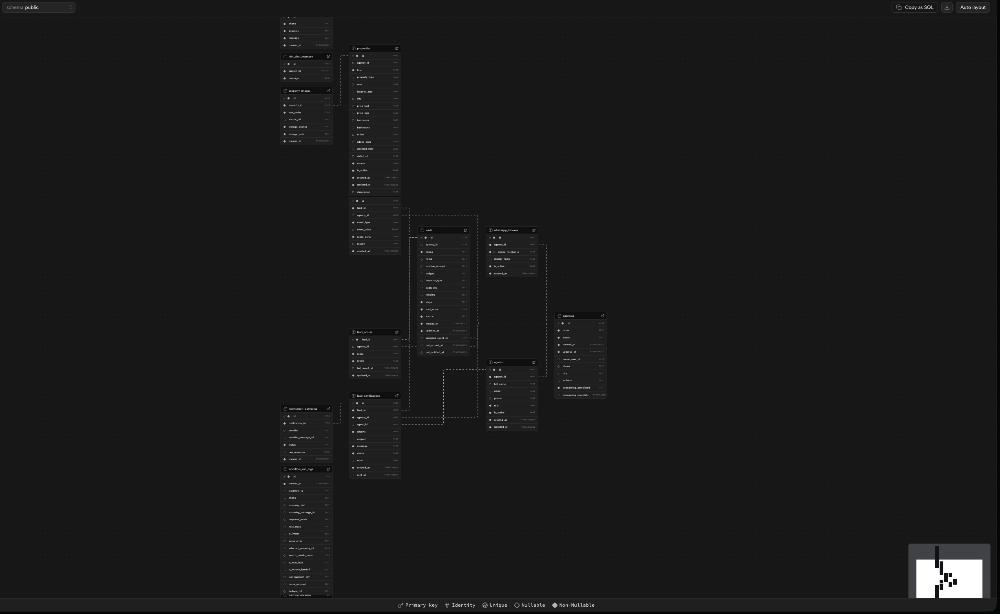
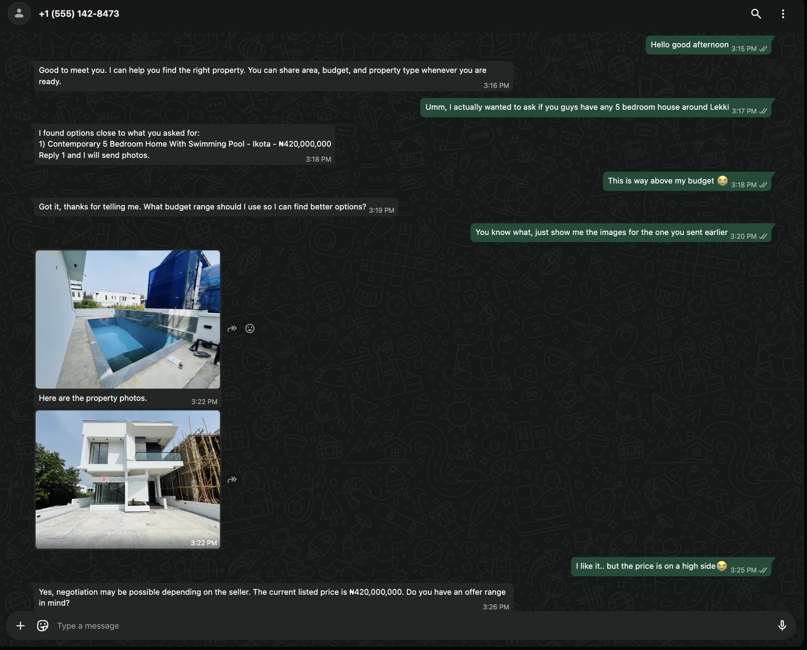
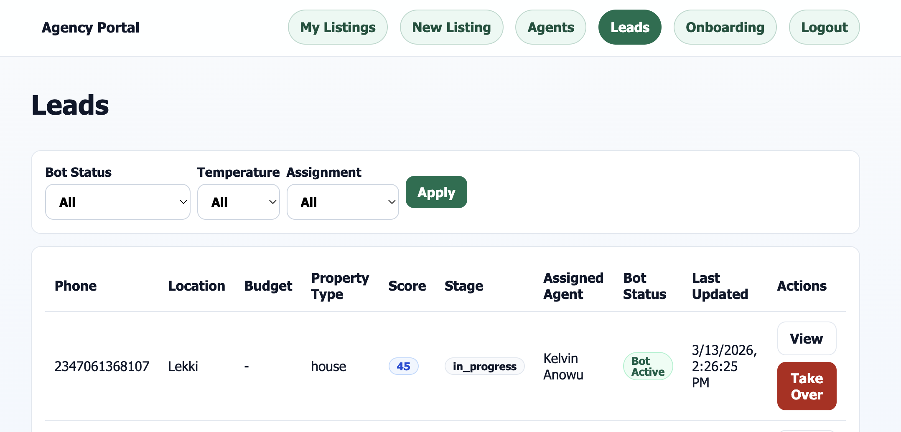
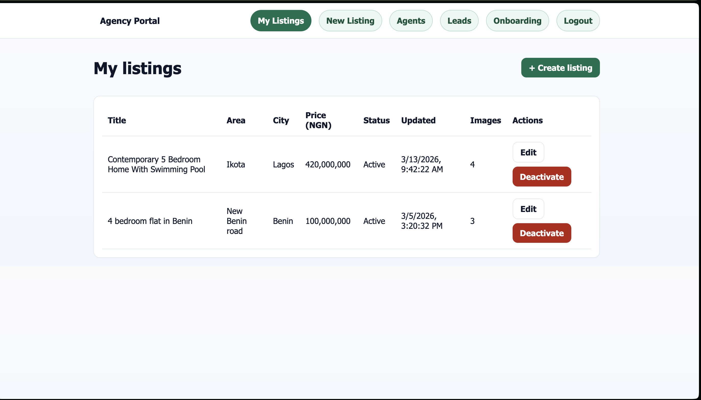
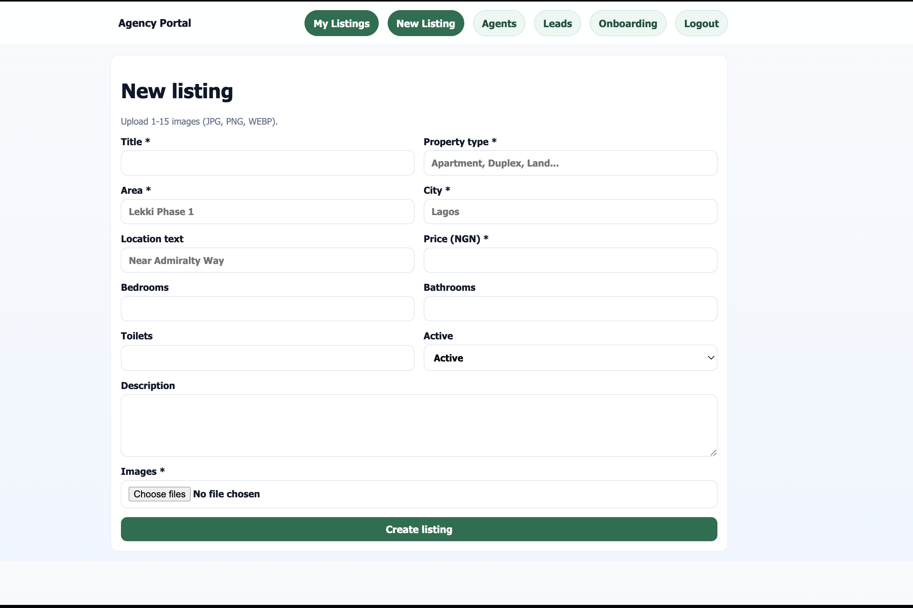
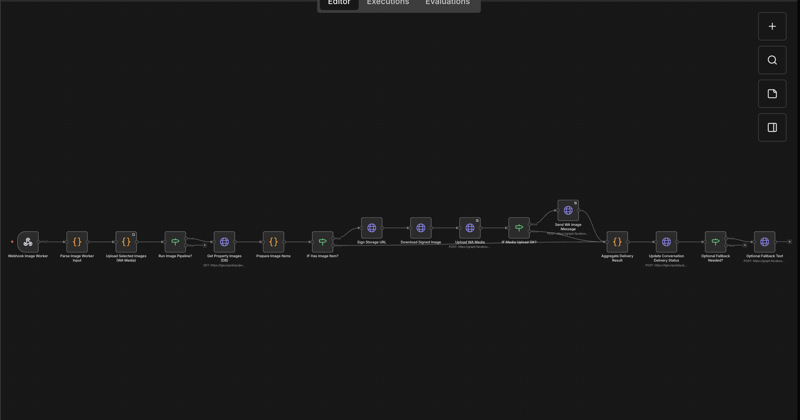
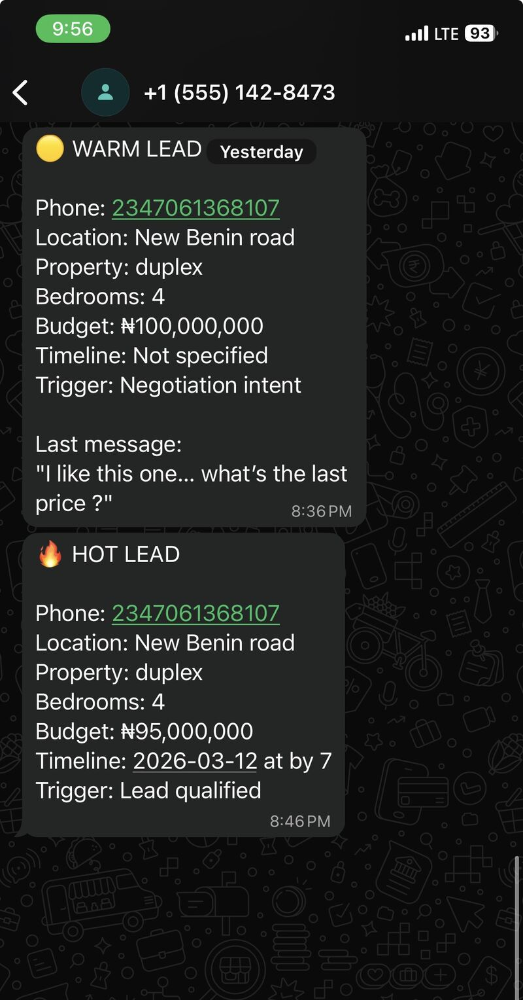

A multi-tenant automation system that turns WhatsApp inquiries into qualified leads, property matches, scheduled inspections, and real-time agent alerts.
This project turns WhatsApp into a front door for real estate agencies. The system captures buyer intent conversationally, stores lead and conversation state in Supabase, searches an agency's property inventory, sends listing images inside WhatsApp, schedules inspections, scores lead intent, and alerts agents when a lead becomes qualified or shows strong buying signals.
It is built as a multi-tenant product rather than a standalone bot. A Next.js agency portal handles listings, agents, leads, and human takeover, while n8n workflows orchestrate lead qualification, property matching, media delivery, lead scoring, and notifications behind the scenes.
Core principle: AI makes the conversation feel natural, but the database, workflow state, property search, scoring, and handoff controls remain deterministic so the business logic stays dependable.
Real estate agencies often receive leads through WhatsApp, but those conversations are usually handled manually. That creates inconsistent qualification, slow follow-up, missing context, weak visibility into lead quality, and poor escalation when a lead turns serious.
The project started from a product truth: buyers already reach agencies on WhatsApp. Instead of moving them into another interface, the system needed to operate inside the channel they already trust and use every day.
A bot is not useful if it forgets what was already said. That made lead state, conversation memory, and listing context more important than the first AI prompt. Supabase became the source of truth before the AI layer was allowed to make the experience more flexible.
AI helped interpret messy natural language, but critical actions such as state transitions, listing search, scoring, notification triggers, and handoff rules had to remain deterministic. That reduced repeated loops and made the workflow reliable enough for production-like use.
Sending a property name is not enough. A serious buyer needs relevant options, images, follow-up questions, and a path into viewing or negotiation. That led to explicit handling for selected property context, image delivery, scheduling, and alerts.
The assistant had to be backed by a portal where agencies can upload listings, manage agents, review leads, and take over chats. Without the agency-side operating layer, the automation would stay a demo instead of a usable product.
Once the system became multi-tenant, agency isolation became a product requirement. Property search, notifications, and lead management had to be scoped safely to the correct tenant to avoid serious operational mistakes.
The system is organized around three layers: a Next.js agency portal for management, Supabase for data and media storage, and n8n workflows for automation and orchestration. The database models agencies, agents, properties, property images, leads, conversation state, notifications, and worker logs so every workflow step can rely on shared state.

The assistant qualifies buyers conversationally by collecting area, budget, property type, bedrooms, and timing. Once enough context exists, it searches the correct agency inventory, returns matching options, sends property images directly in chat, and continues the conversation toward negotiation or viewing.

The agency portal gives the business side of the system full operational control. Agencies can manage listings, upload inventory, assign agents, inspect lead state, and take over conversations when automation should stop replying.



The main n8n workflow handles inbound message normalization, dedupe, state retrieval, routing, and persistence. Worker workflows isolate specialized responsibilities so complex operations can be hardened independently without making the main orchestration too crowded.

The system scores buyer intent based on field completion and high-intent signals such as image requests, negotiation language, and viewing requests. When a lead becomes warm or hot, the assigned agent receives a structured WhatsApp notification with the context needed to step in quickly.

This project was built as a personal product and startup-style prototype. I designed and implemented the end-to-end experience across automation, backend structure, product logic, and agency operations.
This project reinforced that conversational AI becomes truly useful only when it is anchored to durable state, clear business rules, and an operational interface that real teams can trust. It also highlighted how early product decisions around tenant isolation and human handoff become critical as soon as a prototype starts resembling a real workflow.
Key takeaway: AI works best in operational products when it handles language flexibility while deterministic systems protect context, workflow safety, and business-critical decisions.